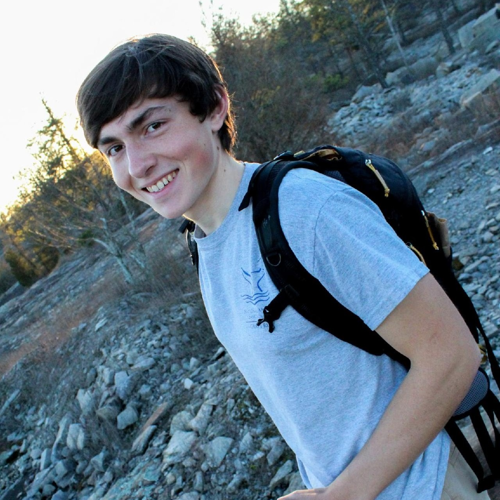

My name is Jake Holt. I am a third year biology major at the Georgia Institute of Technology pursuing a B.S. in biology with a quantitative biology certificate and the UROP Research Option certificate. When I'm not doing school work, I can be found on my bike, playing the viola, or reading.
